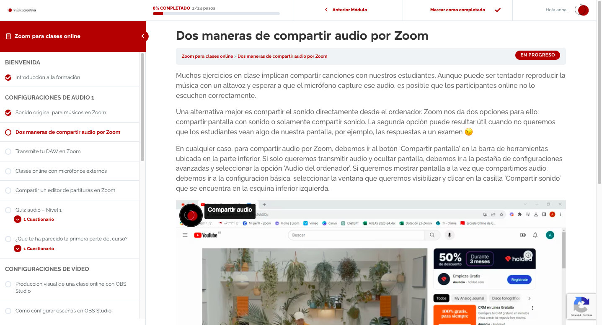

Textos en tono conversacional: Opté por un tono conversacional y amigable en los textos para evitar que los usuarios se sintieran abrumados por la complejidad de la tecnología. Este enfoque no solo favorece la accesibilidad y comprensión, sino que también crea un ambiente de aprendizaje más relajado, ayudando a los docentes a abordar el contenido de manera más cómoda y efectiva.
Pasos detallados y videos cortos: Los videos de menos de un minuto, grabados con Loom, mostraban demostraciones prácticas en aulas reales, brindando a los docentes una visión clara de cómo aplicar las soluciones a los problemas técnicos comunes. Estos videos no solo ofrecían pasos detallados, sino que contextualizaban las soluciones dentro de escenarios reales de aula.
